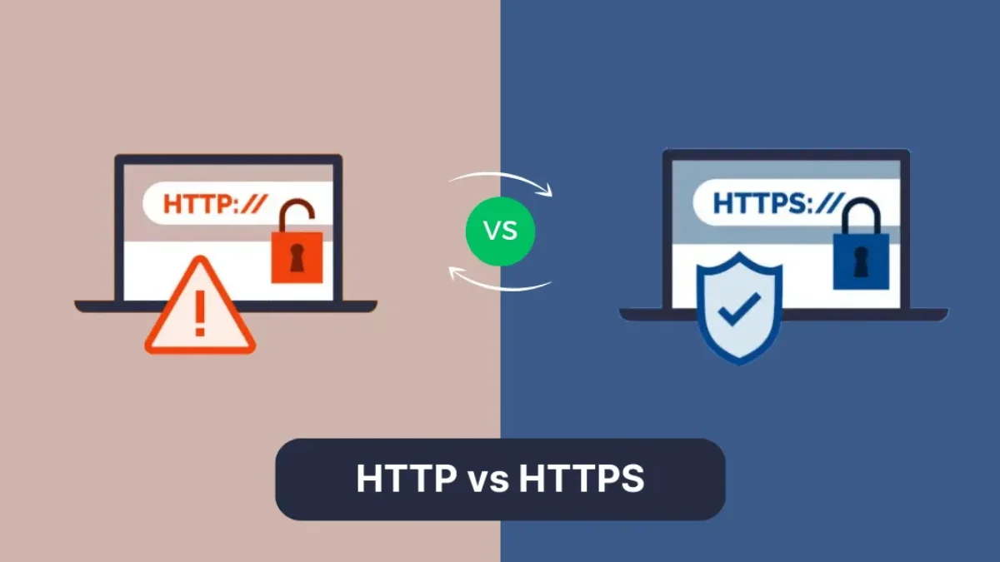

HTTP (Hypertext Transfer Protocol) and HTTPS (Hypertext Transfer Protocol Secure) are essential for web communication. HTTPS adds encryption via SSL/TLS, making it more secure.
| Feature | HTTP | HTTPS |
|---|---|---|
| Security | Unsecured | Secured with SSL/TLS |
| Data Encryption | No | Yes |
| SEO Ranking | Lower | Higher |
| Trust | Less Trusted | More Trusted |
FTP (File Transfer Protocol) is used for transferring files between computers, while SFTP (Secure File Transfer Protocol) adds encryption for secure data transfer.
Protocols such as HTTPS and SFTP play a vital role in protecting data by ensuring confidentiality, integrity, and security. They safeguard sensitive information from cyber threats, making them crucial for secure web access and file transfers.